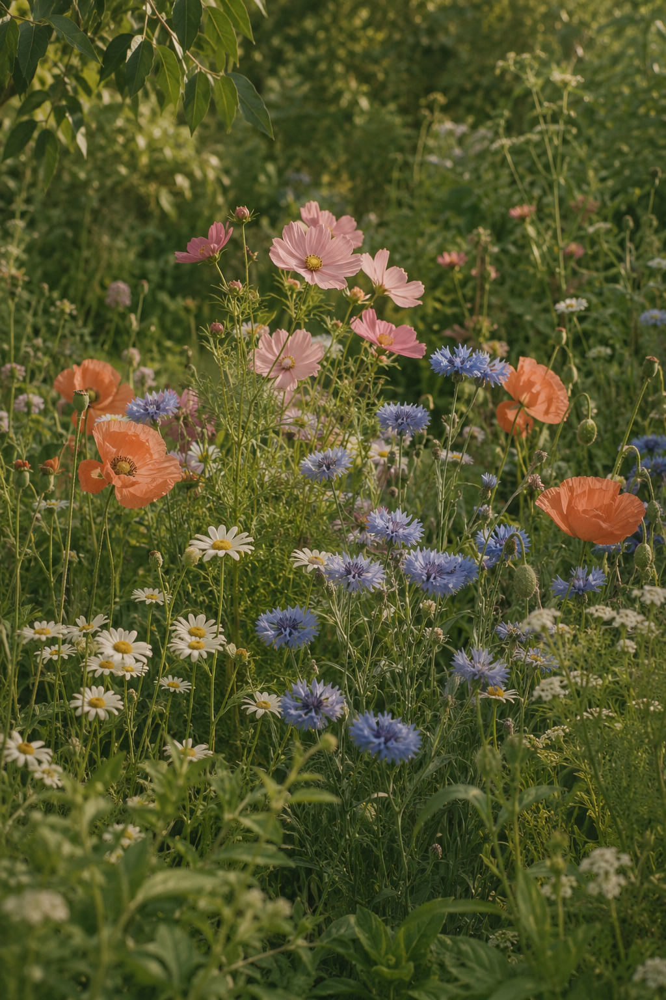

Síndrome de Kleine-Levin
El síndrome de Kleine-Levin es un trastorno poco frecuente. Se manifiesta en episodios en los que la persona duerme mucho más de lo habitual. También pueden aparecer desorientación y cambios en la forma de pensar o comportarse.
Los episodios suelen durar de unos días a varias semanas. Entre ellos, la persona suele recuperar su ritmo habitual de sueño y actividad. La causa del síndrome todavía se desconoce.

Una flor para dar las gracias
Durante mis episodios escribo y respondo menos. Aun así, hay personas que me siguen escribiendo. Sus mensajes son una forma de estar cerca cuando me cuesta participar en la conversación.
Por eso hice flores y postales. Son mi manera de agradecerles que sigan ahí y de regalarles algo que hable de ese acompañamiento.